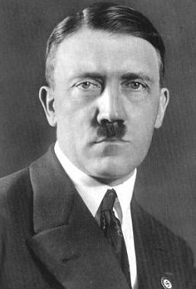

- 
- 독일국의 지도자 겸 국가수상
- 아돌프 히틀러(Adolf Hitler)
- 임기: 1933년 1월 30일 ~ 1945년 4월 30일
- 특이사항: 학살자
- 사망: 1945년 4월 30일, 자살
|
- 소비에트 사회주의 공화국 연방의 최고 권력자
- 이오시프 스탈린(Joseph Vissarionovich Stalin)
- 임기: 1922년 4월 3일 ~ 1952년 10월 16일
- 특이사항: 조선민주주의인민공화국의 지도자 자격을 심사해
김일성을 선정함
- 사망: 1953년 3월 5일, 의문사
|
- 미국의 제 32대 대통령
- 프랭클린 루즈벨트(Franklin Delano Roosevelt)
- 임기: 1933년 3월 4일~1945년 4월 12일
- 특이사항: 이승만의 대한민국 임시정부 요청을
승인함
- 사망: 1945년 4월 12일, 뇌출혈
|
- 영국의 제 42대, 44대 총리
- 윈스턴 처칠(Rt Hon. Sir Winston Churchil)
- 임기: 1940년 5월 10일~1945년 7월 26일
1951년 10월 26일~1955년 4월 7일
- 특이사항: 1차 세계대전에 엘리자베스 2세(현 영국 여왕)와 참전함
- 사망: 1965년 1월 24일, 자연사
|